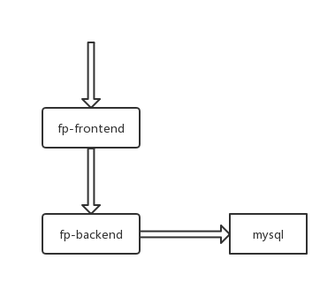

4. 实践¶
4.1. 概述¶
该章节通过两个模拟服务(fp-frontend和fp-backend)，介绍如何做容器化改造，穿插介绍Docker相关的知识和使用方法，以及如何部署，如何解决服务依赖等。主要包括:
- 镜像制作(Dockerfile)
- 镜像管理
- 容器部署
- 服务依赖
- 网络配置
- 数据持久化
4.2. 准备工作¶
4.2.1. 开发环境¶
由于是从开发态制作镜像，需要准备好开发环境。模拟服务都是使用java语言开发，基于maven做依赖包管理。
- JDK
模拟服务中使用的是 1.8.0_181 版本。
从Oracle官网下载对应的tar.gz二进制包，在本地解压，配置下JAVA_HOME即可。
执行java -version验证。输出如下:
java version "1.8.0_181"
Java(TM) SE Runtime Environment (build 1.8.0_181-b13)
Java HotSpot(TM) 64-Bit Server VM (build 25.181-b13, mixed mode)
- maven
模拟服务中使用的是3.5.4版本。
从Apache官网下载二进制包，在本地解压，配置M2_HOME和PATH即可。
执行mvn -v验证。输出如下:
Apache Maven 3.5.4 (1edded0938998edf8bf061f1ceb3cfdeccf443fe; 2018-06-18T02:33:14+08:00)
Maven home: /home/llliu/workspace/maven
Java version: 1.8.0_181, vendor: Oracle Corporation, runtime: /home/llliu/workspace/jdk8/jre
Default locale: en_US, platform encoding: UTF-8
OS name: "linux", version: "4.15.0-33-generic", arch: "amd64", family: "unix"
使用的maven仓库是阿里云的，仓库地址配置如下:
<mirrors>
<mirror>
<id>nexus-aliyun</id>
<mirrorOf>central</mirrorOf>
<name>Nexus aliyun</name>
<url>http://maven.aliyun.com/nexus/content/groups/public</url>
</mirror>
</mirrors>
将上述配置增加至 $M2_HOME/conf/settings.xml 中。
4.2.2. 开发工程¶
4.3. 镜像¶
该章节介绍如何制作Docker镜像和镜像管理。
4.3.1. 制作镜像¶
在基本概念中介绍过，Docker镜像其实是一个特殊的文件系统，采用分层结构存储，是一组文件系统的组合。镜像构建时，会一层层构建，前一层是后一层的基础。每一层构建完就不会再发生改变，后一层上的任何改变只发生在自己这一层。
所以，制作镜像的过程，就是在编排如何修改、增加文件或者配置，形成一个新的文件层。将这些编排动作写入一个脚本，这个脚本就是Dockerfile。
Dockerfile 是一个文本文件，其内包含了一条条的指令(Instruction)，每一条指令构建一层，因此每一条指令的内容，就是描述该层应当如何构建。
4.3.1.1. 基础镜像¶
既然是定制文件系统，自然就需要有个root fs，这个root fs就是基础镜像。基础镜像的引入是通过FROM指令。因此，一个Dockerfile中，必须有FROM指令，而且必须是第一条指令。
在docker hub镜像仓库中，有很多基础镜像，例如 nginx，nodejs，ubuntu。在Dockerfile中通过FROM <image_name>:<image_tag>指令即可引用基础镜像。例如:
FROM ubuntu:14.04
其中，ubuntu是镜像名称(image_name)，14.04是镜像tag(image_tag)。
说明: 引用基础镜像时，必须带上image_tag，不得使用latest，防止在重复构建时，基础镜像变更导致构建的版本差异。
下面，来构建第一个镜像。
首先，在工程跟目录下创建
Dockerfile文件。## 以 fp_frontend 工程为例 ## 进入工程根目录 cd fp_frontend ## 创建Dockerfile文件 touch Dockerfile
编辑
Dockerfile，增加基础镜像。## 编辑文件 vim Dockerfile ## 增加基础镜像 FROM ubuntu:14.04
接着，增加一层操作。如下:
## 执行shell命令(暂先不管RUN指令，后面会介绍) RUN echo "my first docker image."
退出，保存
Dockerfile。构建镜像。
sudo docker build -t demo-image:0.1 .
输出如下:
Sending build context to Docker daemon 516.6 kB Step 1/2 : FROM ubuntu:14.04 14.04: Pulling from library/ubuntu e53f134edff2: Pull complete efbbd466a715: Pull complete e11368b8e0c7: Pull complete 7dab2de7692b: Pull complete Digest: sha256:cac55e5d97fad634d954d00a5c2a56d80576a08dcc01036011f26b88263f1578 Status: Downloaded newer image for ubuntu:14.04 ---> 5dbc3f318ea5 Step 2/2 : RUN echo "my first docker image." ---> Running in b5f02ed2d89a my first docker image. ---> d66c9accb323 Removing intermediate container b5f02ed2d89a Successfully built d66c9accb323
查看镜像
sudo docker images
应该会有刚构建的镜像，以及引入的基础镜像，如下:
REPOSITORY TAG IMAGE ID CREATED SIZE demo-image 0.1 d66c9accb323 55 seconds ago 188 MB ubuntu 14.04 5dbc3f318ea5 2 weeks ago 188 MB
4.3.1.2. 构建上下文(build context)¶
上述构建镜像命令---sudo docker build -t demo-image:0.1 .，其中.表示当前目录，但是并不是指的是Dockerfile所在的目录，而是指定的构建上下文路径。
首先我们要理解 docker build 的工作原理。Docker 在运行时分为 Docker 引擎（也就是服务端守护进程）和客户端工具。Docker 的引擎提供了一组 REST API，被称为 Docker Remote API，而如 docker 命令这样的客户端工具，则是通过这组 API 与 Docker 引擎交互，从而完成各种功能。因此，虽然表面上我们好像是在本机执行各种 docker 功能，但实际上，一切都是使用的远程调用形式在服务端（Docker 引擎）完成。也因为这种 C/S 设计，让我们操作远程服务器的 Docker 引擎变得轻而易举。
当我们进行镜像构建的时候，并非所有定制都会通过 RUN 指令完成，经常会需要将一些本地文件复制进镜像，比如通过 COPY 指令、ADD 指令等。而 docker build 命令构建镜像，其实并非在本地构建，而是在服务端，也就是 Docker 引擎中构建的。那么在这种客户端/服务端的架构中，如何才能让服务端获得本地文件呢？
这就引入了上下文的概念。当构建的时候，用户会指定构建镜像上下文的路径，docker build 命令得知这个路径后，会将路径下的所有内容打包，然后上传给 Docker 引擎。这样 Docker 引擎收到这个上下文包后，展开就会获得构建镜像所需的一切文件。
例如上述例子中，将Dockerfile拷贝至子目录中(test)，增加COPY ../pom.xml /tmp指令，执行sudo docker build -t demo-image:0.2 test时，会发现报错:
Sending build context to Docker daemon 2.048 kB
Step 1/3 : FROM ubuntu:14.04
---> 5dbc3f318ea5
Step 2/3 : RUN echo "my first docker image."
---> Using cache
---> 15cbd1708462
Step 3/3 : COPY ../pom.xml /tmp
Forbidden path outside the build context: ../pom.xml ()
从中也可以看出，test目录即是构建上下文，COPY指令的源文件只能是相对于test目录的，不能超出该目录。
那么为什么会有人误以为 . 是指定 Dockerfile 所在目录呢？这是因为在默认情况下，如果不额外指定 Dockerfile 的话，会将上下文目录下的名为 Dockerfile 的文件作为 Dockerfile。
这只是默认行为，实际上 Dockerfile 的文件名并不要求必须为 Dockerfile，而且并不要求必须位于上下文目录中，比如可以用 -f 参数指定某个文件作为 Dockerfile。例如: sudo docker build -t demo-image:0.2 test/Dockerfile .(使用test目录下的Dockerfile，但构建上下文是在当前目录)。
当然，一般大家习惯性的会使用默认的文件名 Dockerfile，以及会将其置于镜像构建上下文目录中。
上面提到docker build时，会将构建上下文中的文件打包上传给Docker引擎。那如果当前有些文件不是构建需要的(尤其大文件，影响构建效率)，就可以使用.dockerignore(类似.gitignore)排除不需要的文件。
例如，创建.dockerignore，并增加pom.xml(执行echo pom.xml > .dockerignore)。再次执行sudo docker build -t demo-image:0.2 .时，会报错:
Sending build context to Docker daemon 514.6 kB
Step 1/3 : FROM ubuntu:14.04
---> 5dbc3f318ea5
Step 2/3 : RUN echo "my first docker image."
---> Using cache
---> 15cbd1708462
Step 3/3 : COPY pom.xml /app
lstat pom.xml: no such file or directory
4.3.1.3. Dockerfile指令¶
除了引入基础镜像的FROM，还有一些常用的指令:
RUN
RUN是用来执行命令行的，有两种格式:- shell格式:
RUN <命令>，就像直接在命令行中输入的命令一样。刚才写的 Dockerfile 中的 RUN 指令就是这种格式。 - exec 格式：
RUN ["可执行文件", "参数1", "参数2"]，这更像是函数调用中的格式。
RUN是最常用的指令，例如:RUN apt-get update RUN apt-get install -y gcc libc6-dev make wget RUN wget -O redis.tar.gz "http://download.redis.io/releases/redis-5.0.3.tar.gz" RUN mkdir -p /usr/src/redis RUN tar -xzf redis.tar.gz -C /usr/src/redis --strip-components=1 RUN make -C /usr/src/redis RUN make -C /usr/src/redis install
按照之前所说，
Dockerfile中每执行一条指令，就会建立一层。像上面，执行构建时，就会产生７层镜像，这样往往会使得镜像非常臃肿、非常多层，不仅增加了构建时间，还增大了出错概率。Union FS 是有最大层数限制的，比如 AUFS，是不得超过 127 层。
像上面的情况，应该做命令合并，如下:
FROM debian:stretch RUN buildDeps='gcc libc6-dev make wget' \ && apt-get update \ && apt-get install -y $buildDeps \ && wget -O redis.tar.gz "http://download.redis.io/releases/redis-5.0.3.tar.gz" \ && mkdir -p /usr/src/redis \ && tar -xzf redis.tar.gz -C /usr/src/redis --strip-components=1 \ && make -C /usr/src/redis \ && make -C /usr/src/redis install \ && rm -rf /var/lib/apt/lists/* \ && rm redis.tar.gz \ && rm -r /usr/src/redis \ && apt-get purge -y --auto-remove $buildDeps首先，之前所有的命令只有一个目的，就是编译、安装 redis 可执行文件。因此没有必要建立很多层，这只是一层的事情。因此，这里没有使用很多个 RUN 对一一对应不同的命令，而是仅仅使用一个 RUN 指令，并使用 && 将各个所需命令串联起来。将之前的 7 层，简化为了 1 层。在撰写 Dockerfile 的时候，要经常提醒自己，这并不是在写 Shell 脚本，而是在定义每一层该如何构建。
并且，这里为了格式化还进行了换行。Dockerfile 支持 Shell 类的行尾添加 \ 的命令换行方式，以及行首 # 进行注释的格式。良好的格式，比如换行、缩进、注释等，会让维护、排障更为容易，这是一个比较好的习惯。
此外，还可以看到这一组命令的最后添加了清理工作的命令，删除了为了编译构建所需要的软件，清理了所有下载、展开的文件，并且还清理了 apt 缓存文件。这是很重要的一步，我们之前说过，镜像是多层存储，每一层的东西并不会在下一层被删除，会一直跟随着镜像。因此镜像构建时，一定要确保每一层只添加真正需要添加的东西，任何无关的东西都应该清理掉。
- shell格式:
COPY
COPY指令将构建上下文目录中的<源路径>的文件/目录复制到新的一层的镜像内的<目标路径>。格式为:COPY [--chown=<user>:<group>] <源路径>... <目标路径>
注意: 源文件一定是在构建上下文下，所以必须是相对路径。
比如:
COPY target/fp-frontend-0.0.1.jar /app
<源路径>可以是多个，甚至可以是通配符，例如:COPY hom* /mydir/ COPY hom?.txt /mydir/
<目标路径>可以是容器内的绝对路径，也可以是相对于工作目录的相对路径（工作目录可以用 WORKDIR 指令来指定）。目标路径不需要事先创建，如果目录不存在会在复制文件前先行创建缺失目录。此外，还需要注意一点，使用 COPY 指令，源文件的各种元数据都会保留。比如读、写、执行权限、文件变更时间等。
在使用该指令的时候还可以加上
--chown=<user>:<group>选项来改变文件的所属用户及所属组。COPY --chown=55:mygroup files* /mydir/ COPY --chown=bin files* /mydir/ COPY --chown=1 files* /mydir/ COPY --chown=10:11 files* /mydir/
ADD
ADD指令和COPY的格式和性质基本一致。但是在COPY基础上增加了一些功能。比如
<源路径>可以是一个 URL，这种情况下，Docker 引擎会试图去下载这个链接的文件放到<目标路径>去。下载后的文件权限自动设置为 600，如果这并不是想要的权限，那么还需要增加额外的一层RUN进行权限调整，另外，如果下载的是个压缩包，需要解压缩，也一样还需要额外的一层RUN指令进行解压缩。所以不如直接使用RUN指令，然后使用wget或者curl工具下载，处理权限、解压缩、然后清理无用文件更合理。因此，这个功能其实并不实用，而且不推荐使用。如果
<源路径>为一个 tar 压缩文件的话，压缩格式为 gzip, bzip2 以及 xz 的情况下，ADD指令将会自动解压缩这个压缩文件到<目标路径>去。ADD指令相比于COPY会包含更复杂的功能，但COPY的语义更明确，所以，尽可能使用COPY。ADD的最适合的场景，就是上述提及的需要自动解压的场合。另外需要注意的是，ADD指令会令镜像构建缓存失效，从而可能会令镜像构建变得比较缓慢。在使用该指令的时候还可以加上
--chown=<user>:<group>选项来改变文件的所属用户及所属组。CMD
CMD用来指定容器的启动命令，指令格式和RUN类似，有两种格式:- shell格式:
CMD <命令> - exec格式:
CMD ["可执行文件", "参数1", "参数2"....] - 参数列表格式:
CMD ["参数1", "参数2"...]。在指定了ENTRYPOINT指令后，用CMD指定具体的参数。
之前介绍容器的时候曾经说过，Docker 不是虚拟机，容器就是进程。既然是进程，那么在启动容器的时候，需要指定所运行的程序及参数。CMD 指令就是用于指定默认的容器主进程的启动命令的。在运行时可以指定新的命令来替代镜像设置中的这个默认命令。
在指令格式上，一般推荐使用
exec格式，这类格式在解析时会被解析为 JSON 数组，因此一定要使用双引号"，而不要使用单引号。如果使用 shell 格式的话，实际的命令会被包装为
sh -c的参数的形式进行执行。比如：CMD echo $HOME
在实际执行中，会将其变更为：
CMD [ "sh", "-c", "echo $HOME" ]
这就是为什么我们可以使用环境变量的原因，因为这些环境变量会被 shell 进行解析处理。
使用
CMD，需要特别注意容器中应用在前台执行和后台执行的问题。Docker 不是虚拟机，容器中的应用都应该以前台执行，而不是像虚拟机、物理机里面那样，用 upstart/systemd 去启动后台服务，容器内没有后台服务的概念。
比如:
CMD service nginx start
发现通过上述的方式启动nginx的化，在通过
sudo docker run启动容器时，执行完成后，容器就退出了。甚至在容器中使用systemctl命令结果却根本无法执行。对于容器而言，其启动程序就是容器应用进程，容器就是为了主进程而存在的，主进程退出，容器就失去了存在的意义，从而退出，其它辅助进程不是它需要关心的东西。
而使用
service nginx start命令，则是希望upstart来以后台守护进程形式启动nginx服务。而刚才说了CMD service nginx start会被理解为CMD [ "sh", "-c", "service nginx start"]，因此主进程实际上是 sh。那么当service nginx start命令结束后，sh 也就结束了，sh 作为主进程退出了，自然就会令容器退出。正确的做法是直接执行 nginx 可执行文件，并且要求以前台形式运行。比如：
CMD ["nginx", "-g", "daemon off;"]
- shell格式:
ENTRYPOINT
ENTRYPOINT的目的和CMD一样，都是在指定容器启动程序及参数。ENTRYPOINT在运行时也可以替代，不过比CMD要略显繁琐，需要通过docker run的参数--entrypoint来指定。当指定了
ENTRYPOINT后，CMD 的含义就发生了改变，不再是直接的运行其命令，而是将CMD的内容作为参数传给ENTRYPOINT指令，换句话说实际执行时，将变为：<ENTRYPOINT> "<CMD>"
那相比于
CMD，ENTRYPOINT有什么好处呢？- 场景一: 让镜像变得像命令一样使用
假设我们需要一个得知自己当前公网IP的镜像，用
CMD实现:
FROM ubuntu:18.04 RUN apt-get update \ && apt-get install -y curl \ && rm -rf /var/lib/apt/lists/* CMD [ "curl", "-s", "https://ip.cn" ]
执行
sudo docker build -t myip:0.1 .构建镜像。如果需要查询当前公网IP，只需要执行:sudo docker run myip:0.1
就可以得到如下结果:
当前 IP: 103.59.48.21 来自: 香港特别行政区
但，在启动时传递参数时，如下:
sudo docker run myip:0.1 -i
结果却是:
container_linux.go:247: starting container process caused "exec: \"-i\": executable file not found in $PATH" docker: Error response from daemon: oci runtime error: container_linux.go:247: starting container process caused "exec: \"-i\": executable file not found in $PATH". ERRO[0000] error getting events from daemon: net/http: request canceled
之前说过，如果是
CMD，启动容器时传递的参数，会替换CMD的默认值，也就是上述执行的是sh -c -i，并不是预期的sh -c curl -s https://ip.cn -i。而使用
ENTRYPOINT就可以解决这个问题，可以将上述Dockerfile中CMD替换成ENTRYPOINT，重新构建，验证下。- 场景二: 应用运行前的准备工作
启动容器就是启动主进程，但有些时候，启动主进程前，需要一些准备工作。
比如，在实际场景中，会避免使用 root 用户去启动服务，从而提高安全性，而在启动服务前还需要以 root 身份执行一些必要的准备工作，最后切换到服务用户身份启动服务。或者除了服务外，其它命令依旧可以使用 root 身份执行，方便调试等。
这些预备动作，就可以写一个脚本，然后放到
ENTRYPOINT中去执行，而把脚本将要接收到的参数(即CMD指定的命令)作为命令，在脚本最后执行。例如，官网的redis镜像就是这么做的:Dockerfile:
FROM alpine:3.4 ... RUN addgroup -S redis && adduser -S -G redis redis ... ENTRYPOINT ["docker-entrypoint.sh"] EXPOSE 6379 CMD [ "redis-server" ]
docker-entrypoint.sh:
#!/bin/sh ... # allow the container to be started with `--user` if [ "$1" = 'redis-server' -a "$(id -u)" = '0' ]; then chown -R redis . exec su-exec redis "$0" "$@" fi exec "$@"
脚本的内容是根据传入的参数(即
CMD指定的)来判断，如果是redis-server，则切换到redis用户下执行启动服务器；否则以root用户，执行CMD指定的命令。那么，如果是
sudo docker run -it redis id，CMD被替换为id，会使用root用户执行id命令，输出如下:uid=0(root) gid=0(root) groups=0(root)
- 场景一: 让镜像变得像命令一样使用
假设我们需要一个得知自己当前公网IP的镜像，用
ENV
ENV用来设置环境变量。格式为:ENV <key> <value>ENV <key1>=<value1> <key2>=<value2>...
设置环境变量后，在
ENV后续的指令，或者运行时的应用，都可以使用该环境变量。例如:
FROM ubuntu:14.04 ENV profile=test RUN echo $profile
执行构建
sudo docker build -t env-test:0.1 .，构建中会输出test:Sending build context to Docker daemon 514.6 kB Step 1/3 : FROM ubuntu:14.04 ---> 5dbc3f318ea5 Step 2/3 : ENV profile test ---> Running in 9c4971f4c0e7 ---> 172ff378ada8 Removing intermediate container 9c4971f4c0e7 Step 3/3 : RUN echo $profile ---> Running in 7e6cde357417 test ---> 6c93c2ef1e4b Removing intermediate container 7e6cde357417 Successfully built 6c93c2ef1e4b
通过交互方式进入容器
sudo docker run -ti env-test:0.1 bash，执行:root@57bd9be6fb61:/# echo $profile test
ENV也可以用来作为可变参数，比如官网的node镜像:ENV NODE_VERSION 7.2.0 RUN curl -SLO "https://nodejs.org/dist/v$NODE_VERSION/node-v$NODE_VERSION-linux-x64.tar.xz" \ && curl -SLO "https://nodejs.org/dist/v$NODE_VERSION/SHASUMS256.txt.asc" \ && gpg --batch --decrypt --output SHASUMS256.txt SHASUMS256.txt.asc \ && grep " node-v$NODE_VERSION-linux-x64.tar.xz\$" SHASUMS256.txt | sha256sum -c - \ && tar -xJf "node-v$NODE_VERSION-linux-x64.tar.xz" -C /usr/local --strip-components=1 \ && rm "node-v$NODE_VERSION-linux-x64.tar.xz" SHASUMS256.txt.asc SHASUMS256.txt \ && ln -s /usr/local/bin/node /usr/local/bin/nodejs
这样，在后续版本需要变更时，只需更改
NODE_VERSION环境变量即可。通过环境变量，我们可以让一份 Dockerfile 制作更多的镜像，只需使用不同的环境变量即可。ARG
ARG用来指定构建参数。格式为:ARG <参数名>[=<默认值>]
构建参数和
ENV的效果一样，都是设置环境变量。所不同的是，ARG所设置的构建环境的环境变量，在将来容器运行时是不会存在这些环境变量的。但是不要因此就使用ARG保存密码之类的信息，因为docker history还是可以看到所有值的。Dockerfile中的ARG指令是定义参数名称，以及定义其默认值。该默认值可以在构建命令docker build中用--build-arg <参数名>=<值>来覆盖。VOLUME
VOLUME用来定义匿名卷，格式为:VOLUME ["<路径1>", "<路径2>"...]VOLUME <路径>
按照最佳实践，在容器运行时，应尽量保持容器存储层不发生写操作，对需要保存的数据，应该保存在卷(
volume)中。为了防止运行时用户忘记将动态文件所保存目录挂载为卷，在 Dockerfile 中，我们可以事先指定某些目录挂载为匿名卷，这样在运行时如果用户不指定挂载，其应用也可以正常运行，不会向容器存储层写入大量数据。例如:
VOLUME /data
这里的
/data目录就会在运行时自动挂载为匿名卷，任何向/data中写入的信息都不会记录进容器存储层，从而保证了容器存储层的无状态化。匿名卷是指在启动容器时，随容器启动而创建，随着容器消亡而淹没于卷列表中（对于 docker run 匿名卷不会被自动删除。
通过
sudo docker volume ls可查看创建的卷。输出如下:DRIVER VOLUME NAME local 002ca4875224a327f6874010974f00395922a210078ae36a5193fc049dfc5c1b local 020e077156ea401e510542c85fdd196c23cbaff97df3a26b0ead23ba7c49d85a local service_mariadb_data local service_testlink_data
像
002ca4875224a327f6874010974f00395922a210078ae36a5193fc049dfc5c1b即是匿名卷，通过sudo docker inspect 002ca4875224a327f6874010974f00395922a210078ae36a5193fc049dfc5c1b查看详情，如下“[ { "Driver": "local", "Labels": null, "Mountpoint": "/var/lib/docker/volumes/002ca4875224a327f6874010974f00395922a210078ae36a5193fc049dfc5c1b/_data", "Name": "002ca4875224a327f6874010974f00395922a210078ae36a5193fc049dfc5c1b", "Options": {}, "Scope": "local" } ]
当然，运行时可以覆盖这个挂载设置，如:
sudo docker run -d -v mydata:/data xxxx
在这行命令中，就使用了 mydata 这个命名卷挂载到了 /data 这个位置，替代了 Dockerfile 中定义的匿名卷的挂载配置。 上述查询卷列表中的
service_mariadb_data既是此类。EXPOSE
EXPOSE用来声明端口，格式为:EXPOSE <端口1> [<端口2>...]
EXPOSE指令是声明运行时容器提供服务端口，这只是一个声明，在运行时并不会因为这个声明应用就会开启这个端口的服务。在Dockerfile中写入这样的声明有两个好处，一个是帮助镜像使用者理解这个镜像服务的守护端口，以方便配置映射；另一个用处则是在运行时使用随机端口映射时，也就是docker run -P时，会自动随机映射EXPOSE的端口。要将
EXPOSE和在运行时使用-p <宿主端口>:<容器端口>区分开来。-p，是映射宿主端口和容器端口，换句话说，就是将容器的对应端口服务公开给外界访问，而EXPOSE仅仅是声明容器打算使用什么端口而已，并不会自动在宿主进行端口映射。WORKDIR
WORKDIR用来指定工作目录，格式为:WORKDIR <工作目录路径>
使用
WORKDIR指令可以来指定工作目录（或者称为当前目录），以后各层的当前目录就被改为指定的目录，如该目录不存在，WORKDIR会帮你建立目录。有些常犯的错误是把
Dockerfile等同于 Shell 脚本来书写，这种错误的理解还可能会导致出现下面这样的错误：RUN cd /app RUN echo "hello" > world.txt
如果将这个 Dockerfile 进行构建镜像运行后，会发现找不到
/app/world.txt文件，或者其内容不是 hello。原因其实很简单，在 Shell 中，连续两行是同一个进程执行环境，因此前一个命令修改的内存状态，会直接影响后一个命令；而在 Dockerfile 中，这两行 RUN 命令的执行环境根本不同，是两个完全不同的容器。这就是对 Dockerfile 构建分层存储的概念不了解所导致的错误。之前说过每一个
RUN都是启动一个容器、执行命令、然后提交存储层文件变更。第一层RUN cd /app的执行仅仅是当前进程的工作目录变更，一个内存上的变化而已，其结果不会造成任何文件变更。而到第二层的时候，启动的是一个全新的容器，跟第一层的容器更完全没关系，自然不可能继承前一层构建过程中的内存变化。因此如果需要改变以后各层的工作目录的位置，那么应该使用
WORKDIR指令。USER
USER用来指定当前用户，格式为:USER <用户名>[:<用户组>]
USER指令和WORKDIR相似，都是改变环境状态并影响以后的层。WORKDIR是改变工作目录，USER则是改变之后层的执行RUN,CMD以及ENTRYPOINT这类命令的身份。当然，
USER只是帮助你切换到指定用户而已，这个用户必须是事先建立好的，否则无法切换。RUN groupadd -r redis && useradd -r -g redis redis USER redis RUN [ "redis-server" ]
如果以 root 执行的脚本，在执行期间希望改变身份，比如希望以某个已经建立好的用户来运行某个服务进程，不要使用 su 或者 sudo，这些都需要比较麻烦的配置，而且在 TTY 缺失的环境下经常出错。建议使用 gosu。
# 建立 redis 用户，并使用 gosu 换另一个用户执行命令 RUN groupadd -r redis && useradd -r -g redis redis # 下载 gosu RUN wget -O /usr/local/bin/gosu "https://github.com/tianon/gosu/releases/download/1.7/gosu-amd64" \ && chmod +x /usr/local/bin/gosu \ && gosu nobody true # 设置 CMD，并以另外的用户执行 CMD [ "exec", "gosu", "redis", "redis-server" ]
HEALTHCHECK
HEALTHCHECK用来提供容器内应用进程健康状态检测。 Docker 引擎只可以通过容器内主进程是否退出来判断容器是否状态异常。很多情况下这没问题，但是如果程序进入死锁状态，或者死循环状态，应用进程并不退出，但是该容器已经无法提供服务了格式为:
HEALTHCHECK [选项] CMD <命令>：设置检查容器健康状况的命令 *HEALTHCHECK NONE：如果基础镜像有健康检查指令，使用这行可以屏蔽掉其健康检查指令
HEALTHCHECK支持下列选项:- --interval=<间隔>：两次健康检查的间隔，默认为 30 秒；
- --timeout=<时长>：健康检查命令运行超时时间，如果超过这个时间，本次健康检查就被视为失败，默认 30 秒；
- --retries=<次数>：当连续失败指定次数后，则将容器状态视为 unhealthy，默认 3 次。
和
CMD,ENTRYPOINT一样，HEALTHCHECK只可以出现一次，如果写了多个，只有最后一个生效。在
HEALTHCHECK [选项] CMD后面的命令，格式和ENTRYPOINT一样，分为shell格式，和exec格式。命令的返回值决定了该次健康检查的成功与否：0：成功；1：失败；2：保留，不要使用这个值。例如:
FROM nginx RUN apt-get update && apt-get install -y curl && rm -rf /var/lib/apt/lists/* HEALTHCHECK --interval=5s --timeout=3s \ CMD curl -fs http://localhost/ || exit 1
4.3.1.4. 构建镜像¶
下面以fp-frontend为例，介绍如何编写Dockerfile，构建镜像。
- 编译打包
## 工程跟目录
cd fp-frontend
## 编译
mvn clean package -Dmaven.test.skip=true
编译完成后，在target/fp-frontend-0.0.1-SNAPSHOT.jar即是所需的运行包。
- 在工程根目录下创建
Dockerfile文件
如果按上述步骤操作，可清空Dockerfile文件，或者删除重建。
## 工程根目录
cd fp-frontend
## 创建Dockerfile文件
touch Dockerfile
- 增加基础镜像
由于是java工程，引入的基础镜像是openjdk:8-jre(基础镜像要尽量收拢，稳定，以及尽量小。这里选用jre，而非jdk)。
## 编辑Dockerfile
vi Dockerfile
## 增加基础镜像
FROM openjdk:8-jre
- 创建用户
按照容器化规范要求，需要在Dockerfile中定义非root用户，以该用户运行应用，uid要在5000-5100范围内。
## 用户UID
ARG UID=5000
## 创建用户组
RUN groupadd -r fp
## 创建用户
RUN useradd -r -u $UID -g fp fp
## 使用gosu来切换用户，参考上述USER指令中的介绍
RUN wget -O /usr/local/bin/gosu "https://github.com/tianon/gosu/releases/download/1.10/gosu-amd64"
RUN chmod +x /usr/local/bin/gosu && gosu nobody true
- 创建挂载卷
在示例应用中，会将日志输出到文件中，日志目录是通过LOG_HOME环境变量设置的，具体参考源码中的logback.xml。
所以，这里会用到两个指令--ENV和VOLUME:
## 设置环境变量
ENV LOG_HOME=/logs
## 创建日志目录
RUN mkdir /logs
## 容器中默认的执行用户是root，而应用是用非root用户(即之前创建的fp用户)运行的，这里需要切换/logs目录属主
RUN chown fp:fp /logs
## 创建匿名卷，注意: VOLUME指令一定是要在最后，具体参考: VOLUME机制
VOLUME /logs
- 配置运行程序
规划应用的运行目录为/app，应用程序是之前编译输出的target/fp-frontend-0.0.1-SNAPSHOT.jar:
## 设置工作目录，目录不存在，WORKDIR会自动创建
WORKDIR /app
## 将应用程序从主机上拷贝至容器的/app目录下
COPY target/fp-frontend-0.0.1-SNAPSHOT.jar /app
- 暴露端口
应用对外提供HTTP服务，暴露8081端口，具体参考源码中的application-dev.yml。
## 暴露端口
EXPOSE 8081
- 设置应用启动命令
由于是spring boot应用，编译输出的是fat jar，直接运行jar包即可运行。
## 设置启动命令
ENTRYPOINT ["gosu", "fp", "java", "-jar", "fp-frontend-0.0.1-SNAPSHOT.jar"]
优化
按照我们之前的介绍，需要把Dockerfile做个优化:
- 把版本信息以环境变量(ENV)或者ARG(变量)的形式定义
- 将RUN指令合并(注意执行顺序)
保存Dockerfile。 优化后的Dockerfile参考docker-0.1分支。
构建
构建镜像，镜像名称为fp/frontend，tag为0.0.1:
## 在工程根目录下执行
sudo docker build -t fp/frontend:0.0.1 .
构建完成后，执行sudo docker images查看镜像。
注意: 构建过程中需要下载gosu，保证能够连接外网，如果下载失败，重试。
- 验证
构建完成镜像后，启动容器验证下。
## 运行容器
sudo docker run -d fp/frontend:0.0.1
查看容器状态: sudo docker ps -a，输出如下:
CONTAINER ID IMAGE COMMAND CREATED STATUS PORTS NAMES
ff0474afd136 fp/frontend:0.0.1 "gosu fp java -jar..." 53 seconds ago Up 52 seconds 8081/tcp sad_volhard
容器状态应为Up。
查看容器日志:
sudo docker logs ff0474afd136
- VOLUME机制
在编写Dockerfile时，提到应用会将日志输出到文件，所以创建了挂载卷(/logs)。上述运行容器时，并没有通过-v指定挂载卷。这时，docker会默认创建个挂载卷，这就是所谓的匿名卷。
执行sudo docker inspect ff0474afd136 | grep -A 10 Mounts查看挂载卷信息，如下:
"Mounts": [
{
"Type": "volume",
"Name": "6b00a9e75314367e71c63e408b1bb27c6bf9cc2ec537153e452104671a47a36c",
"Source": "/var/lib/docker/volumes/6b00a9e75314367e71c63e408b1bb27c6bf9cc2ec537153e452104671a47a36c/_data",
"Destination": "/logs",
"Driver": "local",
"Mode": "",
"RW": true,
"Propagation": ""
}
可以看到主机上的挂载卷是在/var/lib/docker/volumes/6b00a9e75314367e71c63e408b1bb27c6bf9cc2ec537153e452104671a47a36c/_data目录下，查看该目录，应有debug-log.log文件(注意，需使用root用户)。
前面提到，可以使用-v命令指定主机挂载卷，如下:
sudo docker run -d -v $PWD/logs:/logs fp/frontend:0.0.1
这里是将当前目录下的logs目录作为挂载卷。这时，会有两种情况:
* 如果本地logs目录不存在，则docker会自动创建，目录的权限为运行docker的用户(示例中为root)
* 如果本地logs目录存在，则docker以本地目录创建挂载卷。
下面说下第二种情况。在本地logs目录存在的情况下，docker的原则是不能删除本地文件，所以，会以本地文件的信息创建挂载卷(包括目录的属主，权限，目录下的内容)。
通过-v命令， 就会使用定义的命名卷($PWD/logs)挂载到容器/logs目录，替代Dockerfile中定义的匿名卷的挂载位置。也就是说，在容器中操作/logs目录，就等同于操作主机上的$PWD/logs目录。
这里就可能会存在一个问题，由于容器中是以fp用户运行的，而本地的$PWD/logs目录的属主可能与容器中的fp不一致(其实是uid不一致)。启动时就会报错，如下:
04:04:06,681 |-ERROR in ch.qos.logback.core.rolling.RollingFileAppender[FILE] - openFile(/logs/debug-log.log,true) call failed. java.io.FileNotFoundException: /logs/debug-log.log (Permission denied)
at java.io.FileNotFoundException: /logs/debug-log.log (Permission denied)
at at java.io.FileOutputStream.open0(Native Method)
at at java.io.FileOutputStream.open(FileOutputStream.java:270)
at at java.io.FileOutputStream.<init>(FileOutputStream.java:213)
at at ch.qos.logback.core.recovery.ResilientFileOutputStream.<init>(ResilientFileOutputStream.java:26)
注: 可以将Dockerfile中的ENTRYPOINT改成CMD，然后重新构建镜像，以交互的方式进入容器sudo docker run -ti -v $PWD/logs:/logs fp/frontend:0.0.1 bash，查看/logs的属主信息。
- 如何解决？
除了上述VOLUME的问题外，还有个问题。
在Dockerfile中指定启动命令中ENTRYPOINT ["gosu", "fp", "java", "-jar", "fp-frontend-0.0.1-SNAPSHOT.jar"]，并没有使用APP_VERSION环境变量。这时因为，这里是把ENTRYPOINT当做字符串解析的，无法使用环境变量。
基于此，可以将启动命令以脚本的形式体现。在启动脚本中，设置挂载卷的属主权限；并可以使用环境变量。
在工程根目录下增加start.sh脚本:
#!/bin/bash
chown fp:fp /logs
exec gosu fp java -jar fp-frontend-$APP_VERSION.jar
给脚本赋权限(chmod +x start.sh)
修改Dockerfile:
## 将启动脚本拷贝至容器，/usr/local/bin默认在PATH路径下
COPY start.sh /usr/local/bin/
## 需改ENTRYPOINT
ENTRYPOINT ["start.sh"]
参考源码docker-0.2分支。
构建镜像，按照挂载卷的方式启动容器，验证。
4.3.2. 镜像管理¶
在本地通过sudo docker build命令构建镜像，只存在本地镜像仓库，不方便共享部署。该章节介绍如何使用镜像仓库来管理和共享镜像。
这里使用的是公司的harbor。
首先，使用域账号登录harbor: https://harbor.yitu-inc.com/harbor/projects，创建个人项目，例如
docker-in-action。注意: 此处是验证用途，将项目设置为私有。
如果要共享镜像，需要将镜像推送(
push)到仓库中。接着，需要在本地登录镜像仓库:
## 登录镜像仓库，输入域账号用户名和密码 > sudo docker login harbor.yitu-inc.com Username (loulou.liu): Password: Login Succeeded
修改镜像名称
镜像要推送到仓库，镜像名称中必须带上仓库的地址信息。格式为
<repo_url>/<project_name>/<image_name>:<image_tag>。这里要使用到
sudo docker tag命令，格式为:sudo docker tag SOURCE_IMAGE[:TAG] TARGET_IMAGE[:TAG]。按照格式，修改
fp/frontend:0.0.1镜像名称:sudo docker tag fp/frontend:0.0.1 harbor.yitu-inc.com/docker-in-action/fp/frontend:0.0.1
推送镜像
推送镜像，使用的
sudo docker push <image_name>:<image_tag>。sudo docker push harbor.yitu-inc.com/docker-in-action/fp/frontend:0.0.1
输出如下:
The push refers to a repository [harbor.yitu-inc.com/docker-in-action/fp/frontend] 174c6af1069e: Pushed a66ac566a07f: Pushed 752b23d46029: Pushed 94cf736a7b95: Pushed 2d63501da7e5: Pushed e6ae888dd260: Pushed 80917357f055: Pushed bfc5dbc4d7a7: Pushed b53b57a50746: Pushed d2518892581f: Pushed c581f4ede92d: Pushed 0.0.1: digest: sha256:a891febf089db7db1e965ef036aee56bf1053f7a58458397fb575b5088dd7a5f size: 2624
上传完成后，刷新harbor页面，即可在 镜像仓库 页面看到刚上传的镜像了。
那在其他环境上，就可以通过
sudo docker pull harbor.yitu-inc.com/docker-in-action/fp/frontend:0.0.1的方式拉取镜像了。说明: 此处设置项目的访问界别为 私有 ，拉取镜像需要login。如果设置为 公开，这无需login。
注意: 这里拉取镜像时，镜像名称不再是 fp/frontend，而是带有镜像仓库地址的。实际上，对于不带仓库地址的镜像，在拉取时，是从设置的默认镜像仓库中拉取的。
fp/backend工程类似，可以参考着制作镜像。具体的可参考源码中的Dockerfile。
4.4. 部署¶
模拟服务的请求流向大概如下:

图4.1 示例应用请求流向
这里需要部署两个应用(fp-frontend和fp-backend)，以及外部存储服务(mysql)。
4.4.1. mysql¶
首先，部署mysql服务。这里直接使用docker官网镜像--mysql:5.7。
- 启动服务
sudo docker run -d --name mysql -e MYSQL_ROOT_PASSWORD=<root_password> -v <mysql_data_volume>:/var/lib/mysql --restart=always -p 3306:3306 mysql:5.7 --character-set-server=utf8mb4 --collation-server=utf8mb4_unicode_ci
说明:
- <root_password>: root用户的密码，需要修改。示例应用中使用的是root。
- <mysql_data_volume>: 本地挂载卷，持久化mysql数据，需要修改。
- 需要将mysql作为服务，所以需要将3306端口映射出来，示例应用中使用的是3306，如存在端口占用，可以修改。
- 建表
示例应用中需要访问数据表，参考如下命令初始化数据:
## 在docker容器中，执行建库建表操作
sudo docker exec -ti mysql bash
## 登录
> mysql -u root -h 127.0.0.1 -p
输入密码
## 建库，schema为fp
> create database fp;
## 创建用户，用户名和密码均为fp
> use fp;
> create user fp identified by 'fp';
> grant all privileges on *.* to fp@'%' identified by 'fp';
## 建表，表名为 resource
> create table resource (
id int(11) not null auto_increment primary key,
`born-year` smallint(6) not null default 0,
`face-image-id` bigint not null default 0,
`face-image-uri` varchar(64) character set utf8 not null default '',
`gender` tinyint(2) not null default 0,
`name` varchar(16) character set utf8 not null default '',
`person-id` int(11) not null default 0,
`picture-uri` varchar(128) character set utf8 not null default ''
) charset=utf8;
## 写入测试数据
> insert into resource (`born-year`, `face-image-id`, `face-image-uri`, `gender`, `name`, `person-id`, `picture-uri`) values ('76', '3288935160016879295', 'BrScBCcHlmKAfybIQqMu', '0', 'KGPJhDclQ3', '120905', 'xGTcUWP5x7rO7ZewlHDs'
);
退出容器。
4.4.2. fp-backend¶
说明: 最终镜像已推送至 harbor，可通过docker pull harbor.yitu-inc.com/observability/fp/backend:0.0.1拉取。
fp-backend中需要连接mysql数据库，连接信息是在源码application-dev.yml。如下：
spring:
datasource:
driver-class-name: com.mysql.jdbc.Driver
url: jdbc:mysql://localhost:3306/fp?useUnicode=true&characterEncoding=utf-8&useSSL=false
username: fp
password: fp
而在部署中，需要根据实际的mysql服务修改配置。
这里有两种方式，一是通过挂载卷的方式，在主机上保存一份application-dev.yml，通过挂载的方式映射到容器中；一是通过环境变量的方式。这里使用第二种方式。(第一种可以参考日志目录挂载的方式自行验证，需要注意的是，-v参数中主机上的配置文件路径需要是绝对路径)。
通过环境变量传入参数，需要两部分，一是配置文件中修改为环境变量的方式(spring boot的方式，其他语言框架类同)；一是在启动容器的时候，传入环境变量。
- 修改配置文件，如下：
spring:
datasource:
driver-class-name: com.mysql.jdbc.Driver
url: jdbc:mysql://${MYSQL_HOST}:${MYSQL_PORT}/${MYSQL_DATABASE}?useUnicode=true&characterEncoding=utf-8&useSSL=false
username: ${MYSQL_USERNAME}
password: ${MYSQL_PASSWORD}
说明: 定义了MYSQL_HOST，MYSQL_PORT，MYSQL_DATABASE，MYSQL_USERNAME，MYSQL_PASSWORD五个环境变量。
参考源码docker-0.1分支。
- 重新构建镜像
sudo docker build -t fp/backend:0.0.1 .
- 运行容器
sudo docker run -d --name fp-backend -e MYSQL_HOST=10.10.23.115 -e MYSQL_PORT=3307 -e MYSQL_DATABASE=fp -e MYSQL_USERNAME=fp -e MYSQL_PASSWORD=fp -p 8082:8082 fp/backend:0.0.1
说明:
- 按照之前定义的环境变量，通过
-e参数依次传入fp-backend对外提供HTTP服务，暴露端口为8082，需要通过-p参数映射到主机。
注意: 在指定mysql服务的IP时，需要指定主机上的公网IP，不能使用localhost或者127.0.0.1。因为是在容器中访问的mysql，指定localhost访问的是容器内部网络。(可以通过--network=host启动mysql)。
- 验证
访问 http://localhost:8082/fp/backend/track/fetch，结果如下:
[
{
"id": 1,
"bornYear": 76,
"faceImageId": 3288935160016879295,
"faceImageUri": "BrScBCcHlmKAfybIQqMu",
"gender": 0,
"name": "KGPJhDclQ3",
"personId": 120905,
"pictureUri": "xGTcUWP5x7rO7ZewlHDs"
}
]
4.4.3. fp-frontend¶
说明: 最终镜像已推送至 harbor，可以通过docker pull harbor.yitu-inc.com/observability/fp/frontend:0.0.1拉取。
fp-frontend需要访问fp-backend的接口，同样，需要定制化配置。参考源码中docker-0.3分支。
重新构建镜像。
- 启动容器
sudo docker run -d --name fp-frontend -e FP_BACKEND_HOST=10.10.23.115 -v $PWD/logs:/logs -p 8081:8081 fp/frontend:0.0.3
说明:
- FP_BACKEND_HOST: 与mysql类似，这里应该指定公网IP
- FP_BACKEND_PORT: 配置文件中给出了默认值8082，与实际运行情况一致，这里无需指定了。
fp-frontend对外暴露8081端口。
- 验证
访问http://localhost:8081/fp/frontend/log/fetch/1，结果如下:
SYeSxTc5UAFlp7lX7j3D
这时，可以通过sudo docker logs查询fp-frontend和fp-backend的日志，查看调用过程。